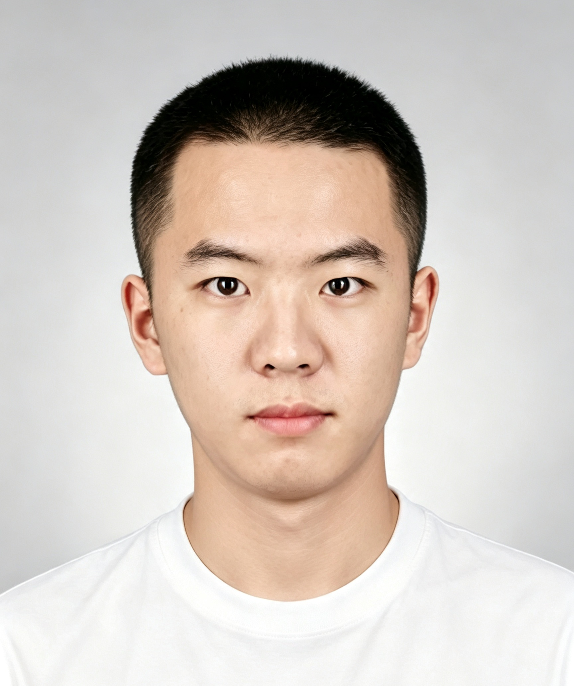

教育背景
济南大学
广告学 · 本科
上海对外经贸大学
数字经济 · 专业硕士
语言能力
中文母语
英语可作为工作语言 · CET-6 已通过
CAPABILITIES & METHODS
能力与方法
点击展开，了解我如何做事
我具有广告学与数字经济的交叉背景，具备销售数据支持、电商内容、活动执行与地域文化策划经验。能从后台数据发现运营问题，梳理需求、协调资源并推进交付；了解 SQL、Python，具备研究分析与视觉表达能力，英语可作为工作语言。
01研究拆解与结构化分析
问题定义 · 资料梳理 · 比较框架
围绕具体问题梳理文献与公开资料，建立分析框架，再组织成有逻辑的表达。开源国际竞争汇报侧重跨地区比较，SHEIN 汇报侧重理论应用与多主体分析。
02数据分析与证据意识
运营观察 · SQL / Python · 实证分析
了解 SQL、Python，并在毕业论文中用于数据处理，关联项目与贡献者数据、构建协作网络、计算指标，开展初步计量分析。在极氪门店实践中整理销售数据、搭建看板，并梳理和对齐数据统计口径。在电商实践中，通过后台数据发现日常表现与投流高峰的时段错位，据此调整内容与投流配合思路。关注指标如何对应研究问题，也保留对代理变量、历史数据与结果解释边界的说明。论文仍在推进结果复核与修订。
03内容创作与视觉表达
脚本策划 · 影像制作 · 演示设计
具有广告学背景，能将主题转化为脚本、影像和演示材料。创作实践覆盖非遗微电影、手艺人纪录片、地域 IP 策划与学术汇报，重视内容叙事、信息层级和视觉组织。
04活动执行与资源协调
需求对接 · 活动执行 · 交付推进
05AI 辅助原型实践
科研场景 · 文献工具 · 持续迭代
围绕个人科研需求，探索借助 AI 推进文献管理工具原型。已有代码包含 AI 摘要、文献范围内对话、关系分析与综述生成。后续将通过需求验证、功能测试与效果评测，继续完善产品案例。
个人工具原型 · 持续打磨中